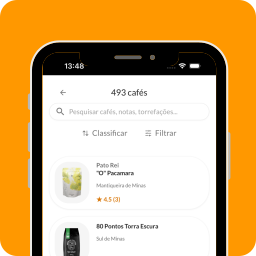

1
Escolha sem errar
Encontre o grão ideal filtrando por notas sensoriais, origem e torra, sempre com a segurança das avaliações reais da nossa comunidade.
O guia definitivo de quem gosta de café de verdade
Explore grãos escolhidos a dedo, confie nas avaliações da nossa comunidade e aprenda a extrair o máximo de cada xícara.


Esqueça as compras às cegas. Reunimos as melhores opções do mercado para que você descubra exatamente o que vai na sua xícara, com o apoio de quem mais entende do assunto.
Trabalhamos exclusivamente com cafés especiais. Leia avaliações sinceras de uma das maiores comunidades de coffee lovers do Brasil antes de decidir o seu próximo grão.
Explore mais de 50 torrefações parceiras. Busque o café ideal filtrando por notas sensoriais, fazenda de origem, processo, preço e muito mais.
Não basta ter um bom café, é preciso saber prepará-lo. A Coffex te guia em cada etapa para garantir uma xícara incrível todos os dias, seja você um iniciante ou um barista em casa.
Aprenda o passo a passo para preparar o seu café em diversos métodos, como V60, Prensa Francesa, Aeropress e muito mais.
Descubra as receitas que outros usuários usaram para o mesmo grão que você escolheu e acerte em cheio na regulagem do seu moedor.
Muito mais que encontrar bons grãos, a Coffex é o seu diário pessoal de cafés. Acompanhe a sua evolução, veja as avaliações dos seus amigos e interaja com a nossa comunidade de coffee lovers.
Encontre o grão ideal filtrando por notas sensoriais, origem e torra, sempre com a segurança das avaliações reais da nossa comunidade.
Acesse o passo a passo de preparo para diversos métodos, descubra a regulagem ideal do seu moedor e siga as receitas favoritas de outros usuários.

Avalie cada café que provar, registre as notas que sentiu e construa um histórico completo de todas as suas degustações e experiências.
Publique suas avaliações, descubra o que seus amigos estão bebendo no momento e ajude outras pessoas a encontrarem cafés surpreendentes.
Pare de beber café no piloto automático. Baixe o Coffex para explorar dicas de preparo, registrar suas notas sensoriais e se conectar com outros coffee lovers. A sua jornada rumo à melhor xícara de café começa aqui.